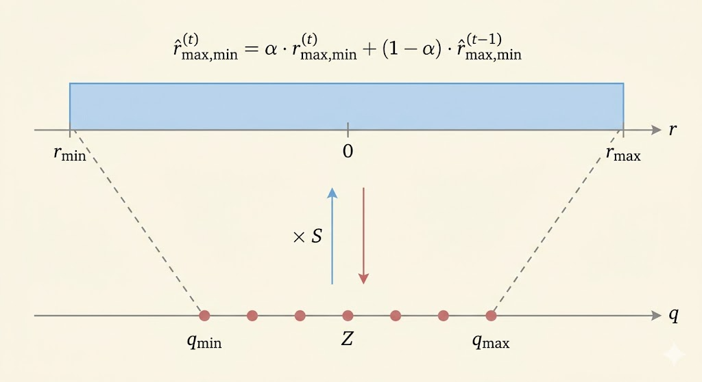
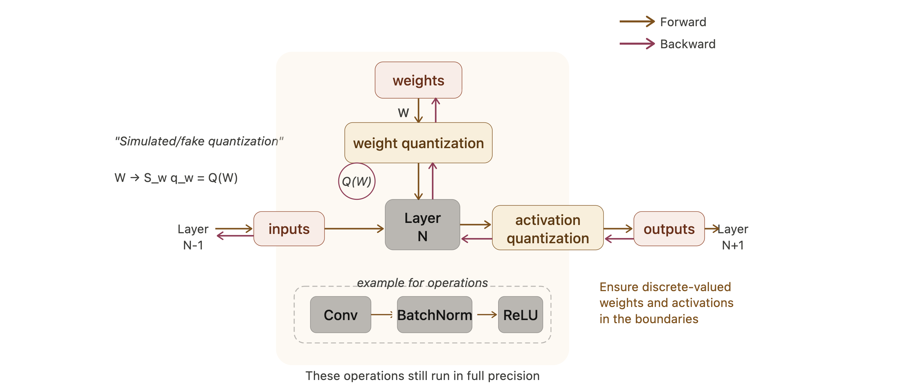

Efficient AI Lecture 6: Quantization (Part II)
Slides: Lecture 6 PDF
Post-Training Quantization
Quantization Granularity
Per-Tensor Quantization
Per-tensor quantization uses one scaling factor for the whole tensor.
- simple and hardware-friendly
- often works well for large models
- can hurt accuracy more on small models
For the example weight matrix
\[ W = \begin{bmatrix} 2.09 & -0.98 & 1.48 & 0.09 \\ 0.05 & -0.14 & -1.08 & 2.12 \\ -0.91 & 1.92 & 0 & -1.03 \\ 1.87 & 0 & 1.53 & 1.49 \end{bmatrix}, \]
we have \(|r_{\max}| = 2.12\). In a 2-bit signed example with \(q_{\max}=1\),
\[ S = \frac{|r_{\max}|}{q_{\max}} = 2.12. \]
The quantized matrix is
\[ \begin{bmatrix} 1 & 0 & 1 & 0 \\ 0 & 0 & -1 & 1 \\ 0 & 1 & 0 & 0 \\ 1 & 0 & 1 & 1 \end{bmatrix} \]
and the reconstructed matrix is
\[ \begin{bmatrix} 2.12 & 0 & 2.12 & 0 \\ 0 & 0 & -2.12 & 2.12 \\ 0 & 2.12 & 0 & 0 \\ 2.12 & 0 & 2.12 & 2.12 \end{bmatrix}. \]
The reconstruction error is
\[ \|W - S \odot q_W\|_F = 2.28. \]
Per-Channel Quantization
Per-channel quantization gives each channel its own scale. That usually reduces distortion because different rows or channels can have very different dynamic ranges.
Using the same matrix,
- \(|r_{\max}|=2.09\), so \(S_0 = 2.09\)
- \(|r_{\max}|=2.12\), so \(S_1 = 2.12\)
- \(|r_{\max}|=1.92\), so \(S_2 = 1.92\)
- \(|r_{\max}|=1.87\), so \(S_3 = 1.87\)
The quantized matrix is
\[ \begin{bmatrix} 1 & 0 & 1 & 0 \\ 0 & 0 & -1 & 1 \\ 0 & 1 & 0 & -1 \\ 1 & 0 & 1 & 1 \end{bmatrix} \]
with reconstruction
\[ \begin{bmatrix} 2.09 & 0 & 2.09 & 0 \\ 0 & 0 & -2.12 & 2.12 \\ 0 & 1.92 & 0 & -1.92 \\ 1.87 & 0 & 1.87 & 1.87 \end{bmatrix} \]
and error
\[ \|W - S \odot q_W\|_F = 2.08. \]
So per-channel quantization improves the reconstruction by adapting scale to local statistics.
Group Quantization
Modern GPUs support even finer scaling granularity. Blackwell introduces micro-tensor scaling to help push low-bit formats like FP4 further.
| Specification | B200 GPU | B100 GPU |
|---|---|---|
| FP4 Tensor Core | 18 petaFLOPS | 14 petaFLOPS |
| FP8/FP6 Tensor Core | 9 petaFLOPS | 7 petaFLOPS |
| INT8 Tensor Core | 9 petaOPS | 7 petaOPS |
| FP16/BF16 Tensor Core | 4.5 petaFLOPS | 3.5 petaFLOPS |
Vector-Scaled Quantization (VSQ)
\[ r = S(q-Z) \rightarrow r = \gamma \cdot S_q (q-Z) \]
- \(\gamma\): per-tensor floating-point scale
- more expensive
- coarser granularity
- \(S_q\): per-vector integer scale
- less expensive
- finer granularity
For 4-bit quantization with a 4-bit vector scale every 16 elements, the effective bit width is
\[ 4 + \frac{4}{16} = 4.25. \]
Multi-Level Scaling (MX)
Multi-level scaling uses several nested scale levels:
\[ r = (q-z) \cdot s_{l_0} \cdot s_{l_1} \cdots \]
| Quantization Approach | Data Type | L0 Group Size | L0 Scale Data Type | L1 Group Size | L1 Scale Data Type | Effective Bit Width |
|---|---|---|---|---|---|---|
| Per-Channel Quant | INT4 | Per channel | FP16 | - | - | 4 |
| VSQ | INT4 | 16 | UINT4 | Per channel | FP16 | 4.25 |
| MX4 | S1M2 | 2 | E1M0 | 16 | E8M0 | 4 |
| MX6 | S1M4 | 2 | E1M0 | 16 | E8M0 | 6 |
| MX9 | INT8 | 2 | E1M0 | 16 | E8M0 | 9 |
Dynamic Range Clipping
Unlike weights, activation ranges vary across inputs.
Here, activation means the output tensor of a layer, not the activation function itself.
So before deployment we need activation statistics. Two common ways are:
- during training, if we own the training process
- calibration, if we only have a pretrained model
During training, a moving average can track the range:
\[ \hat r^{(t)}_{\max,\min} = \alpha \cdot r^{(t)}_{\max,\min} + (1-\alpha) \cdot \hat r^{(t-1)}_{\max,\min}. \]

For calibration, we run representative samples through the FP32 model and choose the clipping range that minimizes reconstruction distortion, often via mean-square error:
\[ \min_{r_{\max}} \mathbb{E}[(X-Q(X))^2]. \]
Clipping is a tradeoff:
- outliers outside the chosen range are saturated, creating clipping error
- but the quantization buckets become denser over the important region, improving precision for most values
A statistics-based way to choose the clipping point is KL divergence:
\[ D_{KL}(P\|Q) = \sum_{i=1}^{N} P(x_i) \log \frac{P(x_i)}{Q(x_i)}. \]
Rounding
Rounding to nearest is not always the best choice. Learning-based rounding tries to choose the quantized value that minimizes downstream error.
AdaRound writes
\[ \tilde w = \left\lfloor \lfloor w \rfloor + \delta \right\rceil, \qquad \delta \in [0,1], \]
and optimizes a relaxed rounding decision:
\[ \operatorname*{argmin}_{\mathbf V} \|\mathbf W \mathbf x - \tilde{\mathbf W}\mathbf x\|_F^2 + \lambda f_{\mathrm{reg}}(\mathbf V) \]
which becomes
\[ \operatorname*{argmin}_{\mathbf V} \left\|\mathbf W \mathbf x - [\lfloor \mathbf W \rfloor + \mathbf h(\mathbf V)]\mathbf x\right\|_F^2 + \lambda f_{\mathrm{reg}}(\mathbf V). \]
- \(\mathbf V\): latent rounding variables
- \(h(\cdot)\): maps those variables into \((0,1)\)
- \(f_{\mathrm{reg}}\): encourages hard rounding decisions
Quantization-Aware Training
Simulated Quantization
QAT keeps a full-precision copy of the weights during training, but inserts quantization in the forward pass so the model learns to live with low-bit inference.
After training, only the quantized weights are used for inference.
Straight-Through Estimator (STE)
The problem is that quantization is discrete, so its true derivative is zero almost everywhere:
\[ \frac{\partial Q(W)}{\partial W} = 0. \]
STE uses a surrogate backward rule and simply passes the gradient through the quantizer:
\[ \frac{\partial L}{\partial W} = \frac{\partial L}{\partial Q(W)}. \]

This is not the exact derivative, but it makes optimization possible in practice.
Binary Quantization
Deterministic Binarization
\[ q = \operatorname{sign}(r) = \begin{cases} +1, & r \ge 0 \\ -1, & r < 0 \end{cases} \]
Stochastic Binarization
Instead of a hard sign, stochastic binarization turns the value into a probability of \(+1\) or \(-1\).
BinaryConnect
BinaryConnect uses a hard sigmoid:
\[ \sigma(r) = \min(\max((r+1)/2, 0), 1). \]
- probability of \(+1\): \(\sigma(r)\)
- probability of \(-1\): \(1-\sigma(r)\)
Binary Weight Networks (BWN)
BWN adds a single floating-point scale for the whole binary weight matrix:
- \(W^{\mathbb B} = \operatorname{sign}(W)\)
- \(\alpha = \frac{1}{N}\|W\|_1\)
That scaling makes the binary matrix better match the original real-valued weights.
XNOR-Net
XNOR-Net binarizes both weights and activations. Then multiply-accumulate can be approximated by:
- XNOR of bit patterns
- popcount to count matches
| Input | Weight | Operations | Memory | Computation |
|---|---|---|---|---|
| Float | Float | \(+,\times\) | \(1\times\) | \(1\times\) |
| Float | Binary | \(+,-\) | about \(32\times\) less | about \(2\times\) less |
| Binary | Binary | XNOR, popcount | about \(32\times\) less | about \(58\times\) less |
Ternary Quantization
Ternary Weight Networks (TWN)
\[ q = \begin{cases} r_p, & r > \Delta \\ 0, & |r| \le \Delta \\ -r_p, & r < -\Delta \end{cases} \]
where
- threshold: \(\Delta = 0.7\,\mathbb E(|r|)\)
- reconstruction value: \(r_p = \mathbb E_{|r|>\Delta}(|r|)\)
So TWN keeps three values: positive, zero, and negative.
Trained Ternary Quantization (TTQ)
\[ q = \begin{cases} w_p, & r > \Delta \\ 0, & |r| \le \Delta \\ -w_n, & r < -\Delta \end{cases} \]
TTQ improves on TWN by making the positive and negative scales trainable:
- \(w_p\): learned positive scale
- \(w_n\): learned negative scale
This allows asymmetric positive and negative magnitudes.
Colab: Quantization Colab